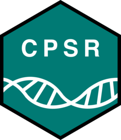

Cancer Predisposition Sequencing Reporter 
The Cancer Predisposition Sequencing Reporter (CPSR) is a computational workflow that interprets germline variants identified from next-generation sequencing in the context of cancer predisposition. The workflow is integrated with the framework that underlies Personal Cancer Genome Reporter - PCGR. While PCGR is primarily intended for reporting and analysis of somatic variants detected in a tumor, CPSR is intended for reporting and ranking of germline variants in protein-coding genes that are implicated in cancer predisposition and inherited cancer syndromes.
CPSR accepts a query file with raw germline variant calls(SNVs/InDels) from a single sample, encoded in the VCF format. Through the use several different virtual cancer predisposition gene panels, the user can flexibly put a restriction on which genes and findings are displayed in the cancer predisposition report.
Snapshots of sections in the cancer predisposition genome report:

The software performs extensive variant annotation on the selected geneset and produces an interactive HTML report, in which the user can investigate:
- ClinVar variants - pre-classified variants according to a five-level tier scheme in ClinVar (Pathogenic to Benign)
- Novel variants - classified by CPSR through ACMG criteria (variant frequency levels and functional effects) into to a five-level tier scheme (Pathogenic to Benign)
- Variant biomarkers - cancer predisposition variants with reported implications for prognosis, diagnosis or therapeutic regimens
- Secondary findings (optional) - pathogenic ClinVar variants in the ACMG recommended list for reporting of secondary findings
- GWAS hits (optional) - variants overlapping with previously identified hits in genome-wide association studies (GWAS) of cancer phenotypes (i.e. low to moderate risk conferring alleles), using NHGRI-EBI Catalog of published genome-wide association studies as the underlying source.
The variant sets can be interactively explored and filtered further through different types of filters (phenotypes, genes, variant consequences, population MAF etc.). Importantly, the unclassified (i.e. non-ClinVar) variants are assigned a pathogenicity score based on the aggregation of scores according to previously established ACMG criteria. The ACMG criteria includes cancer-specific criteria, as outlined and specified in several previous studies (Huang et al., Cell, 2018; Nykamp et al., Genet Med., 2017; Maxwell et al., Am J Hum Genet., 2016; Amendola et al., Am J Hum Genet., 2016). See also Related work below).
News
-
November 2022: 1.0.1 release
- Added CPSR logo (designed by Hal Nakken)
-
February 2022: 1.0.0 release
- Complete restructure of code and Conda installation routines, contributed largely by the great @pdiakumis
- Updated bundle (ClinVar, CancerMine, UniprotKB, PanelApp, CIViC, GWAS catalog)
- Software upgrade (VEP, R/BioConductor)
- New documentation site (https://sigven.github.io/cpsr)
-
June 30th 2021: 0.6.2 release
- Updated bundle (ClinVar, CancerMine, UniprotKB, PanelApp, CIViC, GWAS catalog)
- Software upgrade (VEP, R/BioConductor)
- CHANGELOG
-
November 30th 2020: 0.6.1 release
- Updated bundle (ClinVar, CancerMine, UniprotKB, CIViC, GWAS catalog)
- CHANGELOG
Getting started
-
Learn more about
- Details regarding CPSR input files, and how they should be formatted
- The types and contents of CPSR output files
- ACMG variant classification procedure used in CPSR
- The list of virtual gene panels available in CPSR